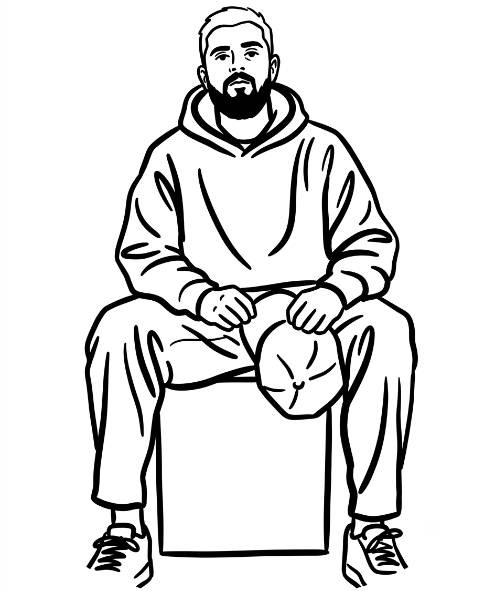

Silok
Tattoo Artist
Ο Silok είναι γνωστός για το μοναδικό του στυλ που συνδυάζει λεπτομερή γραμμικά σχέδια με σύγχρονες τεχνικές. Η δουλειά του χαρακτηρίζεται από καθαρές γραμμές, ισορροπημένες συνθέσεις και δημιουργική προσέγγιση.
Ειδικεύεται σε fine line, dotwork, micro realism και custom commissions.
Portfolio
Μια ματιά στη δουλειά του Silok